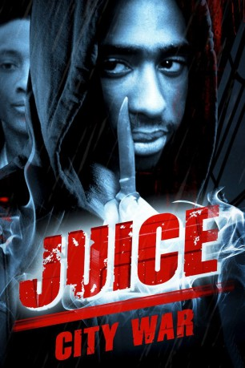

#6359 Juice City War
Alternativ: Juice
 
 IMDB-Wertung: 7.1 / 10
IMDB-Wertung: 7.1 / 10  Metascore: 0
Metascore: 0 
Bishop, Q, Raheem und Steel, die sich selbst als „The Wrecking Crew“ bezeichnen, sind vier afro-amerikanische Freunde, welche in Harlem aufgewachsen sind. Sie schwänzen regelmäßig die Schule, verbringen ihre Tage in einer Spielhalle und klauen LPs. Sie werden ständig durch die Polizei oder eine Puerto-Ricaner-Gruppe belästigt, die von einem Jungen namens Radames angeführt wird. An einem Tag entscheidet die Gruppe, dass sie „größere“ Dinge tun müssen und herausgehen, um den Respekt der anderen zu gewinnen. Aber Q ist nicht sicher, ob er in einem Leben des Verbrechens in zunehmendem Maße beteiligt werden möchte. In einer Samstag-Nacht, unter Bishops Hartnäckigkeit, raubt die Gruppe ein Drugstore aus. Während des bewaffneten Raubüberfalls schießt Bishop ohne Grund dem Drugstore-Inhaber Fernando Quiles in den Kopf und tötet ihn.
Jahr: 1992
Dauer: 90 Minuten
FSK: 16
Land: USA Studio: Paramount Home EntertainmentTonspuren: DD2.0 - ,
Untertitel:
Auflösung: 1080p (1920x1080) Größe: 10240 MB
Genre: Action, Thriller, Drama, Krimi
Regisseur: Ernest R. Dickerson
Drehbuch: Ernest R. Dickerson
Soundtrack:
Darsteller:
 Omar Epps als Q
Omar Epps als Q- Tupac Shakur als Bishop
- Khalil Kain als Raheem
- Cindy Herron als Yolanda
 Vincent Laresca als Radames
Vincent Laresca als Radames Samuel L. Jackson als Trip
Samuel L. Jackson als Trip- George Gore II als Brian
- Grace Garland als Q's Mother
 Queen Latifah als Ruffhouse M.C.
Queen Latifah als Ruffhouse M.C.- Bruklin Harris als Keesha
- Eric Payne als Frank
 Flex Alexander als Contest Auditioner
Flex Alexander als Contest Auditioner Michael Badalucco als Detective Kelly
Michael Badalucco als Detective Kelly LaTanya Richardson Jackson als Steel's Mother
LaTanya Richardson Jackson als Steel's Mother- Mitchell Marchand als Kid at Trip's
 Donald Faison als Student
Donald Faison als Student- John Patrick McLaughlin als Cop #1
- Norman Douglass als Cop #2
- Christopher Rubin als Doctor
- Ed Lover als Contest Judge
- Fab 5 Freddy als Himself
- Anthony 'Treach' Criss als Radames' homie , uncredited
- Moses Edinborough als MTV Producer , uncredited
- George Letrell als Radames' gang , uncredited
- Special Ed als Keesha's Boyfriend , uncredited
- Jermaine 'Huggy' Hopkins als Steel
- Victor Campos als Quiles
- Sharon Cook als Record Store Clerk
- Darien Berry als Blizzard
- Maggie Rush als Myra
- Rony Clanton als Detective Markham
- Jacqui Dickerson als Sweets
- Pablo Guzmán als TV Reporter
- Randy Frazier als Steel's Father
- Oran 'Juice' Jones als Snappy Nappy Dugout
- Corwin Moore als Sam
- Lauren Jones als Raheem's Mother
- Birdie M. Hale als Bishop's Grandma
- L.B. Williams als Bishop's Father
- Eddie Joe als Bartender
- John Di Benedetto als Cop #3
- Juanita Troy-Keitt als Homeless Woman
- Doctor Dré als Contest Judge
- EPMD als Bar Patron
- Erick Sermon als Bar Patron
- Parrish Smith als Bar Patron
- Kool DJ Red Alert als Concert judge , uncredited
- Stretch als Tall Man in Club , uncredited
Datei: X:\1992\Juice City War (1992, FSK16, 1920x1080).mkv seit 10.06.2017
Festplatte: HD 1992-1995
 Es gibt insgesamt 57 Filme in der Gruppe '1992'
Es gibt insgesamt 57 Filme in der Gruppe '1992'